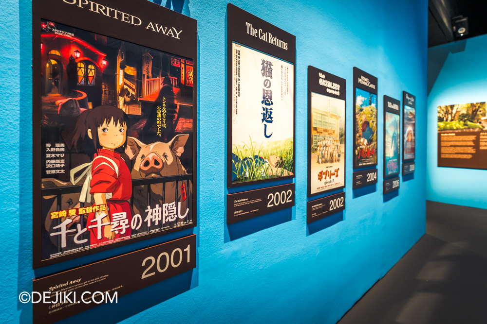

The contract room of Spirited Away's cunning sorceress.

Posters tracing Studio Ghibli cinematic legacy.Chihiro approaches the spirit world's grand entrance.A rainy night encounter with the forest spirit.Still moments from Ghibli's most iconic scenes.A life-size portal into the world of Spirited Away.Warmth and bread from Kiki's Delivery Service.A forgotten entrance between two worlds.